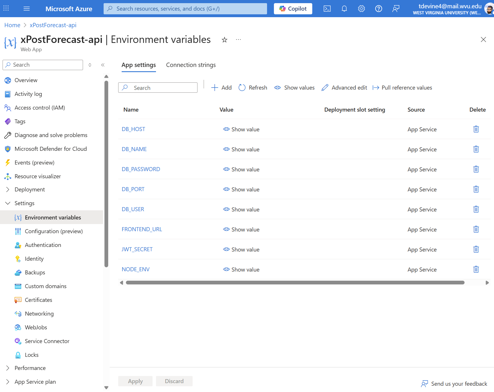
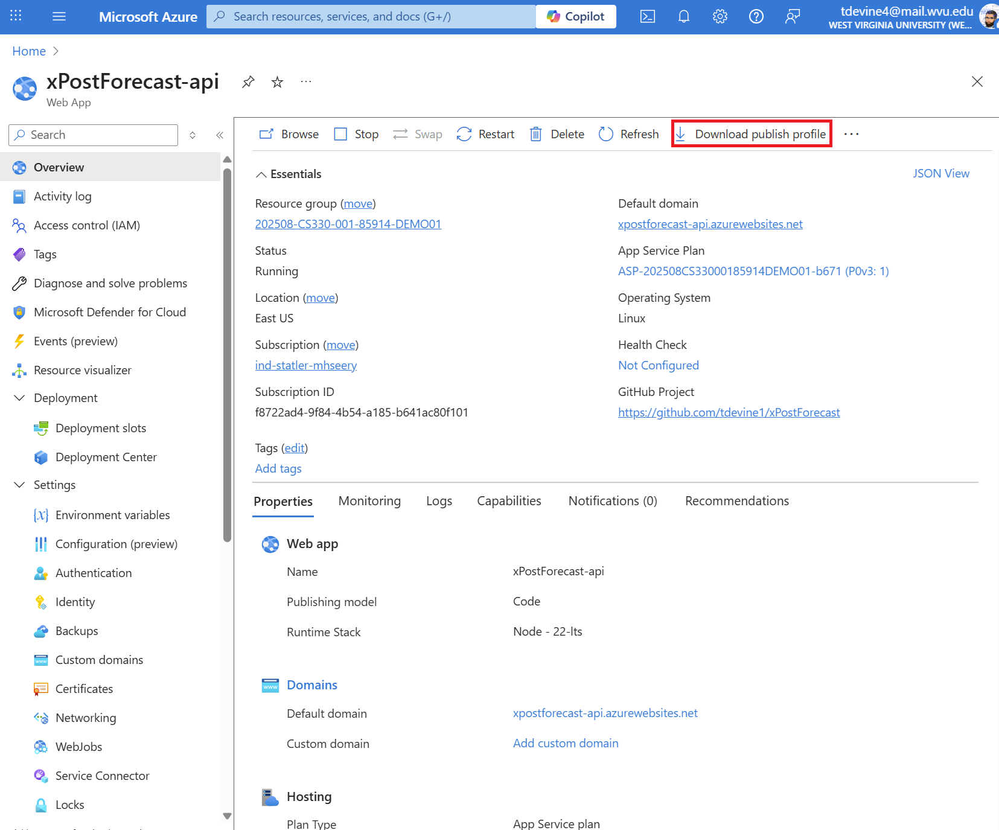
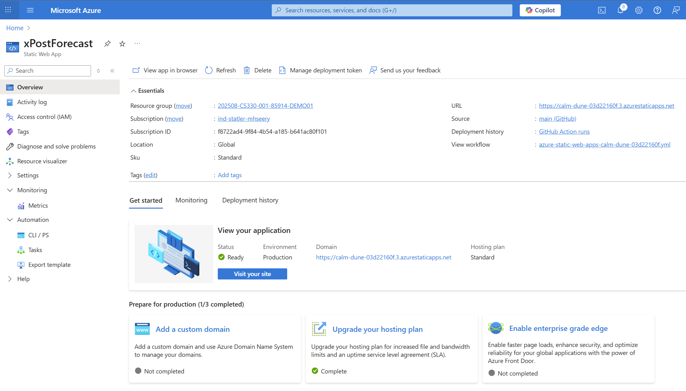
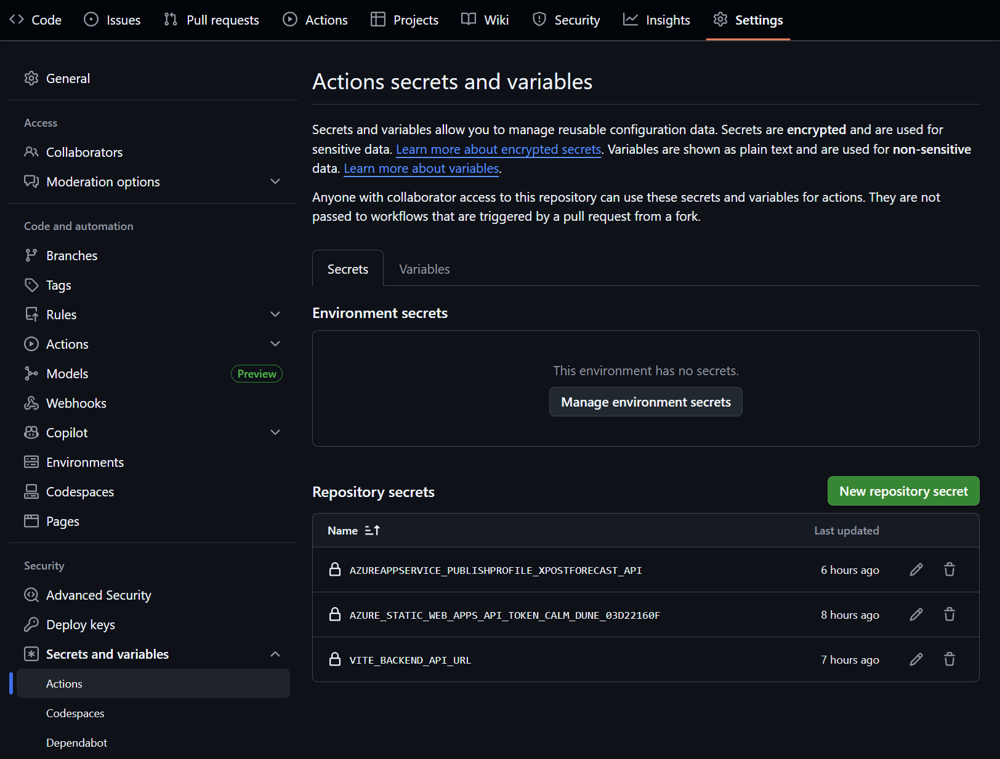
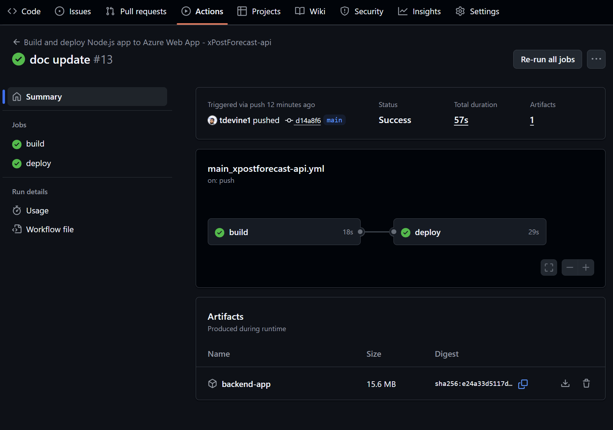
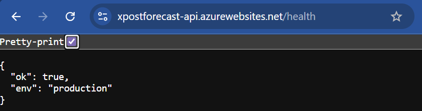
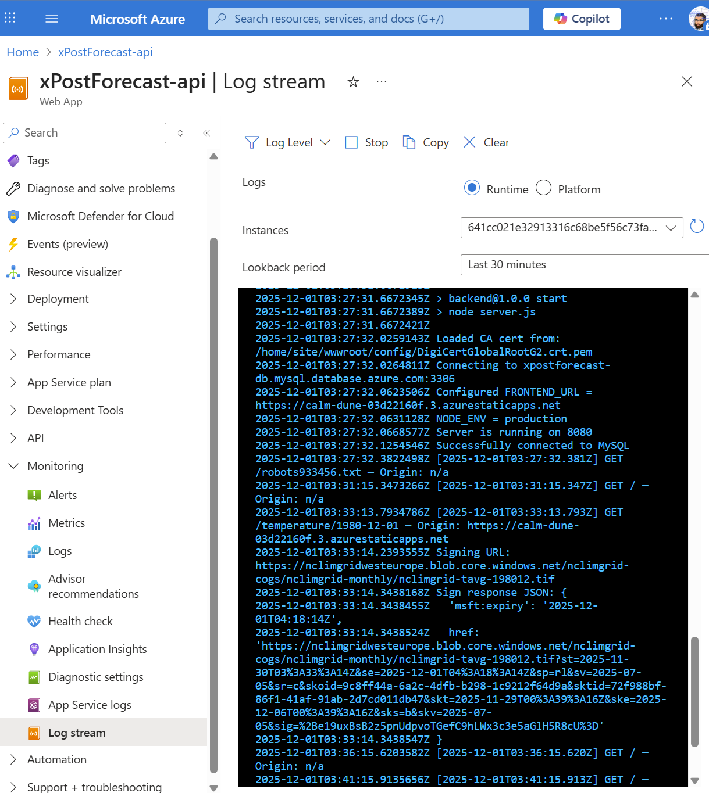
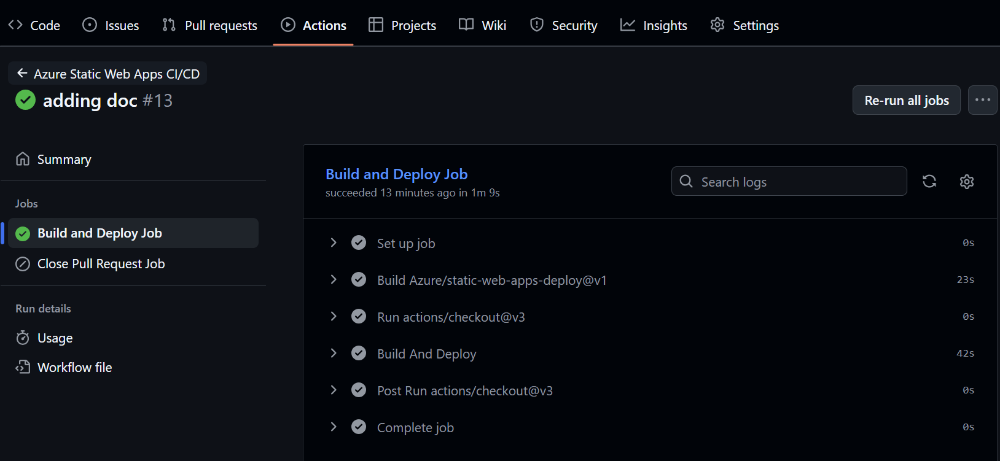

Move your app from your laptop to the internet
Until now your project has run only on your own computer. In Sprint 4 your team puts it on Microsoft Azure so anyone with the link can use it, and sets up GitHub so every change you push is tested and published automatically. This guide tells you what to do, in order, for your own project, and why each step is needed.
frontend/ and backend/ folders
that work on your computer (Sprints 1–3), and npm test must pass in both. Your instructor
creates the Azure resources for your group, so you do not create or delete anything in Azure.
New words are explained in the Glossary.
1. The big picture
On your computer you started two programs, and the browser talked to both. In the cloud it is the same idea, with three places instead:
| Part | Where it runs | What it does |
|---|---|---|
| Frontend (React) | Azure Static Web App | Stores your finished website files and hands them to browsers. Address ends in .azurestaticapps.net. |
| Backend (Node/Express) | Azure App Service | Runs your server code all the time. Address ends in .azurewebsites.net. |
| Database (MySQL) | Azure Database for MySQL | The same database you set up in Sprint 2. |
you push to main
|
v
GitHub Actions --test + upload--> Static Web App (the website)
| --test + upload--> App Service (the server) ----> MySQL
|
Browser --loads the site from the Static Web App
--asks the server for data (login, your API) from the App Service
Two things follow from the website and the server living at different addresses, and most Sprint 4 problems come from one of them:
- The website must be told where the server is. On your laptop that was
http://localhost:5175. In the cloud it is the App Service's address, and it gets written into the website while it is built. - The server must be told which website may talk to it, and the login cookie must be allowed to cross between the two addresses. That is
FRONTEND_URLandNODE_ENV=productionin section 4.
2. What to collect first
Open a text file and fill in this table with your group's values before you touch anything else. You will copy from it all sprint.
| Item | Where to find it |
|---|---|
| App Service name | Azure portal → App Services → your app (top of the page). |
| Backend address | Same page, Overview → Default domain. Copy it; don't type it. An app created in the portal gets a random-looking ending such as your-app-gmhxfca6exbhgccd.eastus-01.azurewebsites.net, so a guessed address fails with ERR_NAME_NOT_RESOLVED. |
| Static Web App address | Azure portal → Static Web Apps → your site → Overview → URL. |
| Database host, name, user, password | Your Sprint 2 notes and local backend/.env file. |
Make sure the right people have the right access first. Everyone on your team should be added to your GitHub repository (Settings → Collaborators and teams) with Write access, and only one teammate should have Admin. That is the principle of least privilege: nobody gets more power than the job needs. Only an Admin can see the repository's Settings tab, so that person will add the secrets in section 5. Everyone else can still run the workflows.
3. Make your code deploy-ready
Code that works on your laptop often needs five small changes before the cloud will run it. If you wrote your backend like the Sprint 2 and 3 guides, most are already done. Check each one in your project.
Backend
-
Read the port from the environment. Azure picks the port your server must use and passes it
in a setting called
PORT. A server that always uses one fixed port is never found, and Azure reports it as failed to start.const PORT = Number(process.env.PORT) || 5175; // Azure's port in the cloud, 5175 on your laptop app.listen(PORT, () => console.log(`Server is running on ${PORT}`)); -
Read every setting from
process.env, and fail loudly when one is missing. Your.envfile never goes to GitHub or Azure, so the same values are typed into Azure instead (section 4). Checking at startup turns a mystery crash into a clear message in the log:const required = ['FRONTEND_URL', 'JWT_SECRET', 'DB_HOST', 'DB_USER', 'DB_PASSWORD', 'DB_NAME']; const missing = required.filter((name) => !process.env[name]); if (missing.length > 0) { console.error(`Missing required environment variables: ${missing.join(', ')}`); process.exit(1); } -
Allow exactly your website, with cookies. This is CORS. The browser refuses to let one
address talk to another unless the server says it is allowed.
app.use(cors({ origin: process.env.FRONTEND_URL, // your Static Web App address, exactly credentials: true, // allow the login cookie to travel with requests })); -
Make the login cookie work between two addresses. Browsers only send a cookie from one site
to another if it is marked
SameSite=NoneandSecure. Keep the relaxed setting for your laptop and switch whenNODE_ENVisproduction:
Also tell Express it sits behind Azure's front door, so it knows the request really was HTTPS:export function authCookieOptions() { if (process.env.NODE_ENV === 'production') { return { httpOnly: true, secure: true, sameSite: 'none', partitioned: true }; } return { httpOnly: true, secure: false, sameSite: 'lax' }; }if (process.env.NODE_ENV === 'production') { app.set('trust proxy', 1); } -
Add a health check. A page that answers without touching the database, so you can ask "is
the server alive?" and separate that from "is the database working?":
app.get('/health', (_req, res) => { res.json({ ok: true, env: process.env.NODE_ENV || 'development' }); });
Your database's security certificate file (for xPostForecast, backend/config/DigiCertGlobalRootG2.crt.pem)
is part of your code and must be committed, because the server loads it from the same folder in the cloud. It is a public certificate, not a secret.
Frontend
-
Take the server's address from a build setting, not from typed-in text. Vite copies any
variable starting with
VITE_into the finished website while it builds:
Locally the value comes fromconst api = axios.create({ baseURL: import.meta.env.VITE_BACKEND_API_URL, withCredentials: true, // send the login cookie with every request });frontend/.env; in the cloud, from a GitHub secret (section 5). Because it is copied in at build time, changing the address means building again. Printing it withconsole.log(import.meta.env.VITE_BACKEND_API_URL)gives you an easy check later. Never put a password in aVITE_variable: everyone who visits can read it. -
Make refreshing a page work. A Static Web App only serves files. A refresh on
/maplooks for a file namedmap, finds none, and shows a 404, even though React Router knows the page. Addfrontend/public/staticwebapp.config.json(Vite copiespublic/into the build):
The{ "navigationFallback": { "rewrite": "/index.html", "exclude": ["/assets/*", "/*.{svg,png,ico,json}"] }, "globalHeaders": { "Referrer-Policy": "strict-origin-when-cross-origin" } }globalHeaderspart matters only if your project shows a map from OpenStreetMap or a similar free service. Those services want to know which website is asking, using theRefererheader. Azure's default tells browsers to send nothing, so the map turns into grey "Access blocked" squares, but only on the deployed site. If you use such a service, also setreferrerPolicy="strict-origin-when-cross-origin"on the map layer, as the example'sMapComponent.jsxdoes.
Commit these changes to main (through a pull request if your team uses them) before you go on.
4. Backend settings in Azure
Your server runs in Azure with no .env file, so you type the same settings into the App Service.
Azure portal → your App Service → Settings → Environment variables → App settings,
then + Add for each row and Apply at the end (the app restarts).

| Name | Value |
|---|---|
DB_HOST | <your-server>.mysql.database.azure.com, same as your local .env |
DB_USER | Same as local |
DB_PASSWORD | Same as local. The name must match what your code reads. |
DB_NAME | Your team's database name |
FRONTEND_URL | Your Static Web App address, exactly, no slash at the end: https://<your-site>.azurestaticapps.net |
JWT_SECRET | A new long random string; don't reuse your local one |
NODE_ENV | production |
- Do not add
PORT. Azure sets it for you. - Use the exact names your own code reads. If yours are called something else, use yours.
- To make a random
JWT_SECRET, run this in a terminal and paste the result:node -e "console.log(require('crypto').randomBytes(48).toString('hex'))" - The database already allows Azure services to connect (your instructor set that up). If the log later shows
ETIMEDOUTfor MySQL, that is a server networking setting: tell your instructor.
5. Secrets and variables
GitHub needs a few things to upload your code to Azure for you. They are passwords, so they are kept as GitHub secrets, never in your code. The teammate with Admin opens the repository's Settings → Secrets and variables → Actions and adds these. Names must match the workflows exactly, including capitals. The workflows guide explains secrets and variables in detail.
| Name | Kind | Value and where it comes from |
|---|---|---|
APP_SERVICE_PUBLISH_PROFILE | Secret | The entire contents of the file from App Service → Overview → Download publish profile. Open it in a text editor, copy everything, then delete the downloaded file. |
AZURE_WEBAPP_NAME | Variable | The App Service's name, exactly as in the portal |
VITE_BACKEND_API_URL | Secret | https:// + the backend's Default domain, no slash at the end |
AZURE_STATIC_WEB_APPS_API_TOKEN | Secret | Static Web App → Overview → Manage deployment token → copy |



This screenshot is from a different project, so its secret names differ. Use the names in the table above.
6. Deploy the backend
- Create
.github/workflows/deploy-backend.yml. The workflows guide, section 6 gives the whole file and explains every line. Use your own folder names. -
Keep only one backend deploy workflow. If the Azure portal's Deployment Center offered to
connect GitHub, it may have added a file named like
main_<your-app>.yml. Delete it, or every push deploys twice. - Check that your
package.jsontestscript really runs tests. npm's default one (echo "Error: no test specified" && exit 1) always fails and blocks every deployment. - Commit and push, then open the repository's Actions tab. If the workflow doesn't start by itself, choose it in the left list and click Run workflow (
mainbranch). - Wait for the green check.

Now ask the server if it is alive. Open https://<your backend's default domain>/health in a
browser. You should see {"ok":true,"env":"production"}.

env says development, NODE_ENV isn't set.
To watch the server start, open the App Service → Monitoring → Log stream, then
Overview → Restart. A healthy start ends with lines like
Server is running on 8080 and Successfully connected to MySQL.

7. Deploy the frontend
- Create
.github/workflows/deploy-frontend.ymlfrom the workflows guide, section 7. It installs, tests, builds your site withVITE_BACKEND_API_URL, and uploads the finished folder. -
Again, only one frontend deploy workflow. If Azure generated
azure-static-web-apps-<name>.ymlwhen the Static Web App was connected to GitHub, either delete it and use yours, or fix it by following the example repo's frontend README, section 5.1 (the generated file needs theVITE_BACKEND_API_URLline added, or the site won't know where the server is). - Make sure the two secrets from section 5 exist, then commit and push (or Run workflow).
- Wait for the green check, then open your Static Web App address.

Order matters only once: deploy the backend first so the website has a server to talk to, but neither workflow depends on the other afterwards. After that, each deploys on its own when its folder changes.
8. Check the live site
Open your site with the browser's developer tools showing (press F12; use the Console and Network tabs) and walk through the whole app like a user:
- Your backend's
/healthpage shows{"ok":true,"env":"production"}. - Your site loads. The console shows the backend address you expected, not
undefined. - Register and log in work.
- Refresh on an inner page (such as
/map): no 404, and you are still logged in. - Your data appears from the API. Pages that need login only work when logged in.
- Any map shows real map tiles, not grey "Access blocked" squares.
- Log out returns you to the login page, and the inner pages send you back to login.
- The console has no red CORS errors, and the App Service log stream has no crashes.
- Try a second browser, or a private window, to prove it works for someone who is not you.
Share the right link. Your project's public address is the Static Web App one
(.azurestaticapps.net), not the backend's. Put it in your README and your report.
9. When something breaks
Find the symptom, check the likely cause, change one thing, and test again. Two tools answer most questions: the browser's Console and Network tabs (what the website saw), and the App Service Log stream (what the server saw).
| What you see | Likely cause | What to do |
|---|---|---|
| Workflow says a secret or variable "is not set" | Missing or misspelled name | Add it (section 5). Names are case-sensitive. |
| Deploy step fails with an authentication error | Old or wrong publish profile or token | Get a fresh one from Azure and replace the secret. |
Workflow fails at npm test | A test fails, or the default npm test script | Run npm test on your laptop and fix it. |
Log stream: Missing required environment variables | An app setting is missing or misspelled | Fix it in Environment variables, then Apply. |
Log stream: Access denied for user | Wrong DB_USER or DB_PASSWORD | Compare with your working local .env. |
Log stream: ETIMEDOUT connecting to MySQL | Server networking | Tell your instructor. |
| "Application Error" page, or the app keeps restarting | Startup crash | Read the first error in the log stream. |
/health hangs the first time, then works | Cold start | Wait a minute and retry. Do not redeploy. |
Console: Frontend API Base URL: undefined, or requests go to /undefined/... | The build never received VITE_BACKEND_API_URL | Check the secret's name and that the workflow passes it to the build, then deploy again. |
Console: ERR_NAME_NOT_RESOLVED | The backend address was guessed | Copy the Default domain from the portal, fix the secret, and redeploy the frontend (the address is baked into the build). |
Console: CORS error, Access-Control-Allow-Origin | FRONTEND_URL doesn't match your site's address exactly | Copy the Static Web App address, no slash at the end, then Apply. |
| Login says success, then you are logged out at once, or you get 401 | The cookie isn't being sent between the two addresses | Set NODE_ENV=production; check FRONTEND_URL. If it works in one browser but not another, a privacy setting is blocking cross-site cookies; tell your instructor. |
| 404 when you refresh an inner page | No staticwebapp.config.json | Add it to frontend/public/ and redeploy. |
| Map is grey squares saying "Access blocked" | The site tells the browser not to send a Referer | Add globalHeaders and the layer's referrerPolicy (section 3), redeploy, hard-reload. |
| Every push deploys twice | Two deploy workflows for one app | Delete the extra one. |
| Workflow is green but the site looks unchanged | Your browser kept the old copy | Hard-reload (Ctrl+Shift+R) or use a private window. |
Still stuck? Copy the exact error message (not a description), say what you already tried, and ask your team, then your instructor. The workflows guide shows how to read a failed run, and the AI guide shows how to ask an AI tool for help without pasting secrets.
10. Code quality (Milestone 6)
Once the app is live, connect your repository to SonarQube Cloud so every push is also checked for bugs, security problems, and untested code. That is a separate guide, and it plugs into the CI workflow you build in the workflows guide: Testing with SonarQube Cloud.
11. Checklist
- Everyone is a collaborator with Write access; exactly one teammate is Admin.
- Backend reads
PORTand its settings from the environment, and has CORS, the production cookie settings, and/health. - Frontend reads
VITE_BACKEND_API_URLand hasstaticwebapp.config.json. - App Service settings are in place (database,
FRONTEND_URL,JWT_SECRET,NODE_ENV=production). - The four secrets and variables exist in GitHub, and the downloaded publish profile is deleted.
- Exactly one deploy workflow per half, and both are green.
- Section 8's whole walk-through works in a second browser.
- The Static Web App address is in your README.
- Nothing secret appears anywhere in your repository.